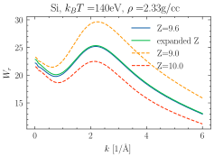

Note
Go to the end to download the full example code
Rayleigh weights for integer expanded ionization states
This example compares the Rayleigh weights for a carbon plasma when a
fractional ionization state is treated on a One-Component HNC calculation, and
compares it to the two-component calculation when
jaxrts.plasmastate.PlasmaState.expand_integer_ionization_states() is
called which creates a plasma state with two ion species of the same element,
but different ionization numbers. The latter calculation will be more costly.

from functools import partial
import jax
import matplotlib.pyplot as plt
from jax import numpy as jnp
import jaxrts
plt.style.use("science")
ureg = jaxrts.ureg
state = jaxrts.PlasmaState(
ions=[jaxrts.Element("Si")],
Z_free=jnp.array([9.6]),
mass_density=jnp.array([2.33]) * ureg.gram / ureg.centimeter**3,
T_e=140 * ureg.electron_volt / ureg.k_B,
)
expanded_state = state.expand_integer_ionization_states()
setup = jaxrts.Setup(
scattering_angle=ureg("60°"),
energy=ureg("8000 eV"),
measured_energy=ureg("8000 eV")
+ jnp.linspace(-100, 40, 500) * ureg.electron_volt,
instrument=partial(
jaxrts.instrument_function.instrument_gaussian,
sigma=ureg("5.0eV") / ureg.hbar / (2 * jnp.sqrt(2 * jnp.log(2))),
),
)
for s in [state, expanded_state]:
s["screening length"] = jaxrts.models.ArbitraryDegeneracyScreeningLength()
s["ion-ion Potential"] = jaxrts.hnc_potentials.DebyeHueckelPotential()
s["ionic scattering"] = jaxrts.models.OnePotentialHNCIonFeat(mix=0.5)
@jax.jit
def probe(state, setup, k):
"""
Calculate W_R for a given k
"""
p_setup = jaxrts.setup.get_probe_setup(k, setup)
return state["ionic scattering"].Rayleigh_weight(state, p_setup)[0]
k = jnp.linspace(0, 6, 500) * (1 / ureg.angstrom)
# Calculate the W_r s
W_r = jax.vmap(probe, in_axes=(None, None, 0))(state, setup, k)
plt.plot(k.m_as(1 / ureg.angstrom), W_r, label=f"Z={state.Z_free[0]}")
W_r_expanded = jax.vmap(probe, in_axes=(None, None, 0))(
expanded_state, setup, k
)
plt.plot(k.m_as(1 / ureg.angstrom), W_r_expanded, label="expanded Z")
state.Z_free = jnp.array([expanded_state.Z_free[0]])
W_r_0 = jax.vmap(probe, in_axes=(None, None, 0))(state, setup, k)
plt.plot(
k.m_as(1 / ureg.angstrom),
W_r_0,
ls="dashed",
label=f"Z={expanded_state.Z_free[0]}",
)
state.Z_free = jnp.array([expanded_state.Z_free[1]])
W_r_1 = jax.vmap(probe, in_axes=(None, None, 0))(state, setup, k)
plt.plot(
k.m_as(1 / ureg.angstrom),
W_r_1,
ls="dashed",
label=f"Z={expanded_state.Z_free[1]}",
)
plt.xlabel("$k$ [1/$\\text{\\AA}$]")
plt.ylabel("$W_r$")
plt.legend()
plt.title(
f"{state.ions[0].symbol}, "
+ f"$k_BT=${(1 * ureg.k_B * state.T_e).m_as(ureg.electron_volt):.0f}eV, "
+ f"$\\rho=${state.mass_density[0].m_as(ureg.gram / ureg.centimeter**3):.2f}g/cc" # noqa: E501
)
plt.tight_layout()
plt.show()
Total running time of the script: (0 minutes 12.459 seconds)